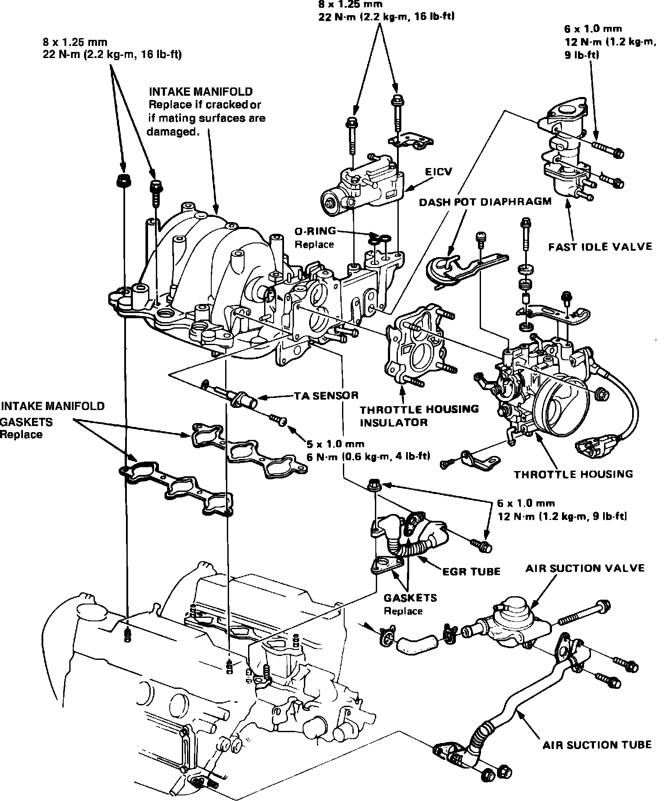

Operation CHARM
: Car repair manuals for everyone.
Home
>>
Acura
>>
1986
>>
Legend V6-2494cc 2.5L SOHC FI
>>
Repair and Diagnosis
>>
Engine, Cooling and Exhaust
>>
Engine
>>
Intake Manifold
>>
Service and Repair
Intake Manifold: Service and Repair
Fig. 5 Intake manifold replacement. Legend w/2.5L engine:
